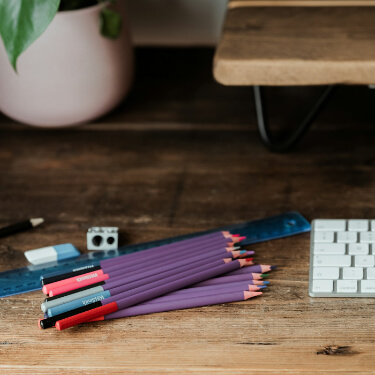
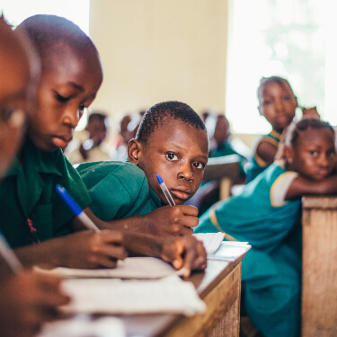
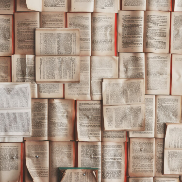
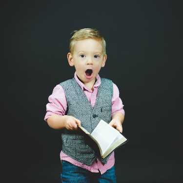
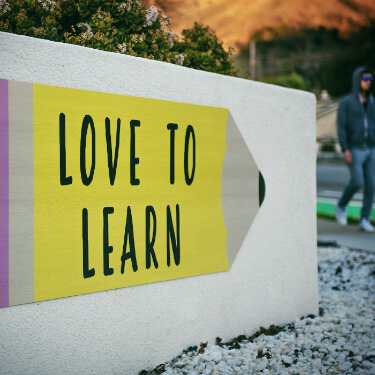

Это было самое начало пути. На этом этапе важно было проникнуться
основами и настроиться на учёбу. И, возможно, подумать, как новые
знания могут повлиять на ваше будущее.
Начало пути я преодолел быстро и с энтузиазмом.
1 спринт: Я — чистый лист
</HTML>
На первых этапах мы работали со страхами и сомнениями, которые
часто испытывают новички. Один из них — страх перед чистым листом.
Это, конечно же, намного сложнее, чем боязнь куска бумаги. Часто
за этим ощущением скрываются более глубокие вопросы: с чего
начать? а вдруг будет слишком сложно? что, если я не справлюсь?
Для меня это не было совсем новым, и я продолжал двигаться
уверенно.
1 спринт: А если не получится?
<CSS>
Первый проект — позади! Но это всё ещё самое начало пути. Радость
могла быстро померкнуть и смениться ожиданием провала. Или вы,
наоборот, могли вдохновиться успехами и поверить в себя.
На первый проект потребовалось времени больше, чем я ожидал, но
дополнительные знания о том, как учиться эффективней помогли мне
понять свои слабые и сильные стороны.
2 спринт: Погоня за идеалом

<desigions>
На этом этапе вы уже достаточно разбирались в основах вёрстки,
чтобы понять, как много ещё впереди. Вы могли попытаться погнаться
за идеалом и понять, что он недостижим. А, может, вы вовсе и не
подвержены перфекционизму и вместо того, чтобы сделать идеально,
старались просто сделать.
Данные спринт и проектная работа были очень интересными. Мне всё
больше нравится как преподносится материал.
2 спринт: О тех, кто рядом

care
Всё это время вы были не одиноки (хотя, возможно, иногда и
чувствовали, что одни против целого мира). Вас окружали
одногруппники, команда сопровождения и просто близкие люди,
которым можно пожаловаться, если очередной макет просто так не
поддавался. Осваивать что-то новое легче, когда рядом есть
единомышленники, не правда ли?
Мне очень помогли мои родственники, они облегчили мне процесс
обучения всячески меня поддерживая.
3 спринт: Обходные стратегии

<support>
На этом курсе вы постоянно решали разные задачи. В какой-то момент
вам могло показаться, что решения просто иссякли. Значит, пришло
время посмотреть на задачу под другим углом.
Иногда было сложно найти верное решение, но в чате поддержки есть
почти все нужные ответы.
3 спринт: Когда опускаются руки

<lifes-style: none;>
Во время учёбы часто возникает чувство, когда не знаешь, за что
хвататься. Вроде и проектную пора сдавать, и задачи хочется
порешать, и в теории получше разобраться, и жизнь не забыть
пожить. В такие моменты очень нужна концентрация. Вспомните,
откуда вы её черпали.
Я всегда рад получать новые знания и учиться чему-то для меня
интересному.
«Сейчас я здесь»

<experience>
Сейчас вы уже очень много знаете о вёрстке. Но это только начало.
Во-первых, впереди ещё много материала про «красотищу». Во-вторых,
с окончанием курса учёба не заканчивается. Вёрстка — это целый
мир. И этот мир постоянно меняется. Познать его полностью не
получится, но это тот случай, когда важен сам процесс познания.
Ведь часто путь — и есть результат.
Мир вёрстки оказался намного шире, чем я ожидал, и я не собираюсь
останавливаться на достигнутом.